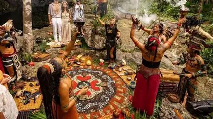
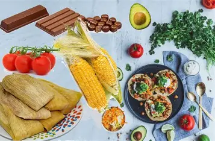

Celebraciones
Las ceremonias comunitarias y festividades reúnen prácticas culturales y convivencia.

Las costumbres, la lengua, la gastronomía y las expresiones culturales forman parte de un legado vivo.
Las ceremonias comunitarias y festividades reúnen prácticas culturales y convivencia.

Los tejidos y la cerámica reflejan conocimientos transmitidos entre generaciones.

El cultivo del maíz, el frijol y la calabaza ha sido importante en muchas comunidades.

Ingredientes como el maíz, el chile y el frijol forman parte de numerosos platillos regionales.
Las lenguas mayas siguen hablándose en comunidades de México y Centroamérica. Entre ellas se encuentran el maya yucateco, el tseltal, el tsotsil, el k'iche' y el q'eqchi'. Cada lengua permite conservar conocimientos, historias e identidad.
Las comunidades mayas actuales mantienen y transforman sus tradiciones. Su cultura continúa presente en la vida familiar, las celebraciones, las artesanías, la lengua y la relación con el territorio.